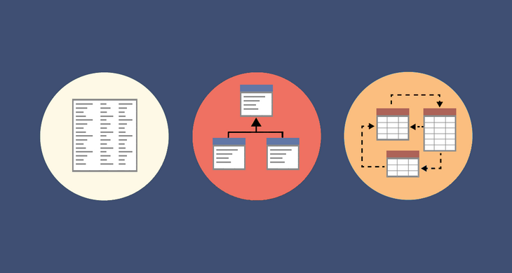

Modelagem
Introdução
A modelagem de dados é o processo de representar as estruturas, relacionamentos, restrições e operações de um banco de dados de forma abstrata e conceitual. A modelagem de dados é importante para facilitar o projeto, a implementação, a manutenção e o uso de um banco de dados.
A modelagem de dados também permite a comunicação entre os desenvolvedores, os usuários e os administradores de um banco de dados. Existem diferentes níveis de modelagem de dados, como o modelo conceitual, o modelo lógico e o modelo físico. Cada nível tem um grau de abstração e detalhamento diferente, dependendo do propósito e da audiência da modelagem. E na figura a seguir pode ser vizualizado alguns desses graus.

Figura 1 : Representação dos passos da modelagem
Histórico de Versão
| Data | Versão | Descrição | Autor |
|---|---|---|---|
| 25/11/23 | 1.0 | Criação do documento | João Lucas |
Bilbiografia
AVI SILBERSCHATZ, HENRY F. KORTH, S. SUDARSHAN. Database System Concepts. [s.l: s.n.].